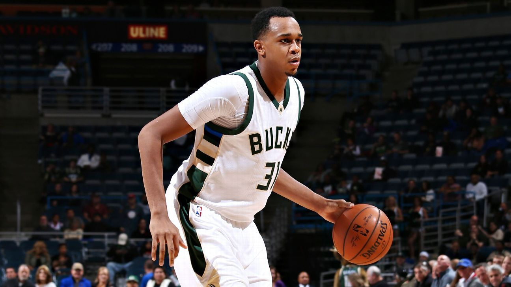
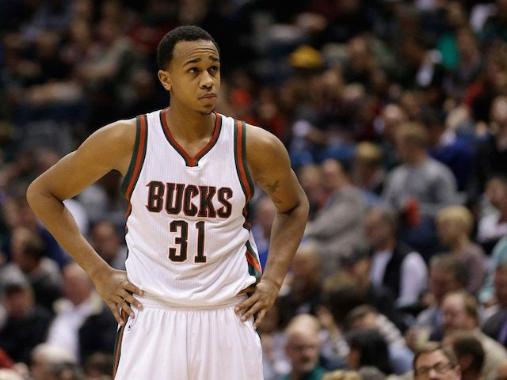
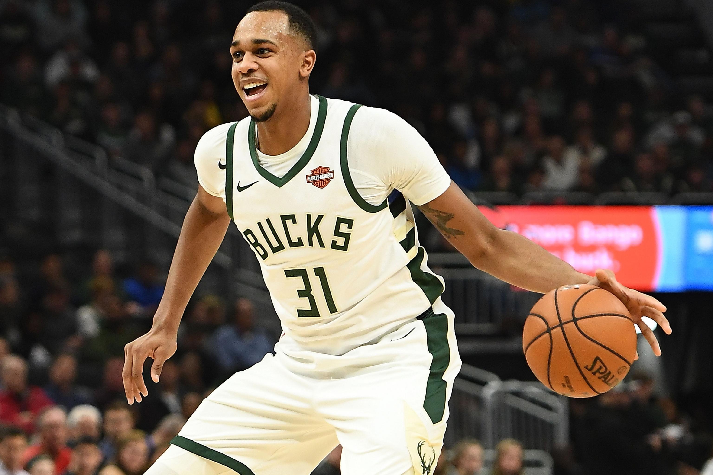
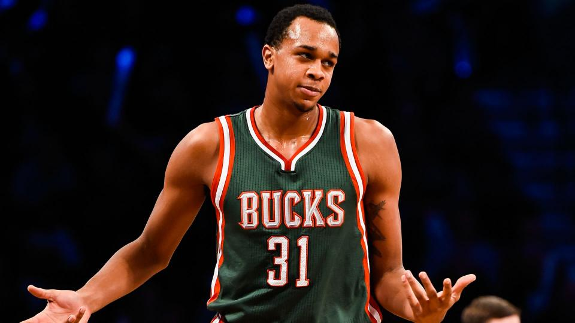
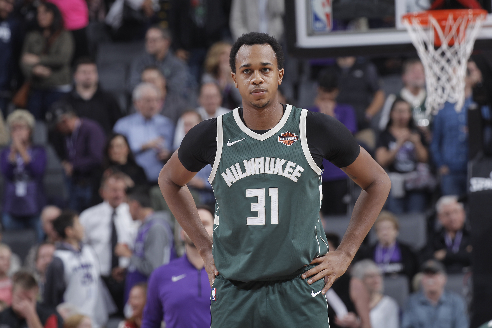

NAME:
John Henson
  


Birthdate:
John Allen Henson (born December 28, 1990) is an American professional basketball player who last played for Mets de Guaynabo of the Baloncesto Superior.
Salary:
John Henson NBA Salary ; 2020/21 · $158,907 ($188,070*) ; 2019/20 · $9,732,396 ($11,592,905*) ; 2018/19 · $10,577,466 ($12,807,226*) ; 2017/18 · $11,422,536
Awards:
As a sophomore in the 2010–11 season, Henson was the winner of the ACC Defensive Player of the Year award for 2011 after averaging 11.7 points, 10.1 rebounds.
Back